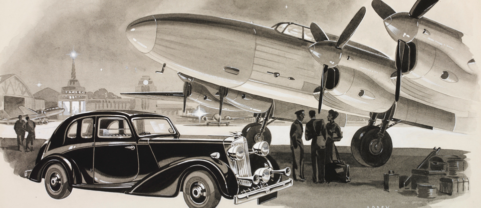

Ang termino nga mubo nga ika-20 nga siglo, orihinal nga gisugyot ni Iván Berend (Hungarian Academy of Sciences) apan gihubit ni Eric Hobsbawm, usa ka istoryador ug tigsulat sa Marxista sa Britanya, naghisgot sa panahon tali sa mga tuig 1914 ug 1991. Ang panahon nagsugod sa sinugdanan sa Unang Gubat sa Kalibutan ug natapos sa pagkahugno sa Unyon Sobyet.
